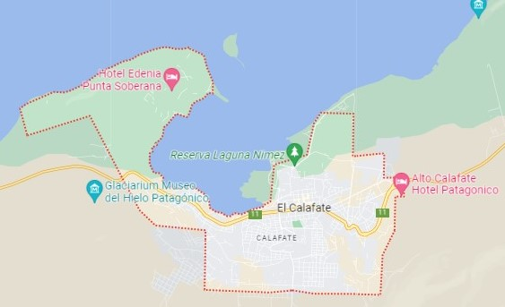
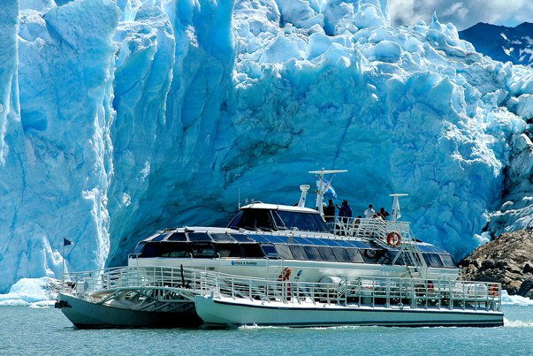
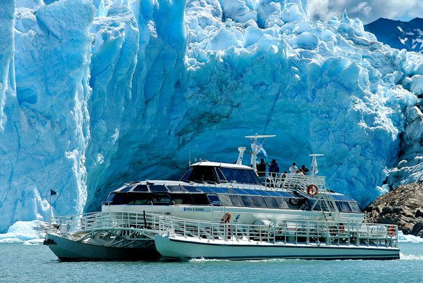
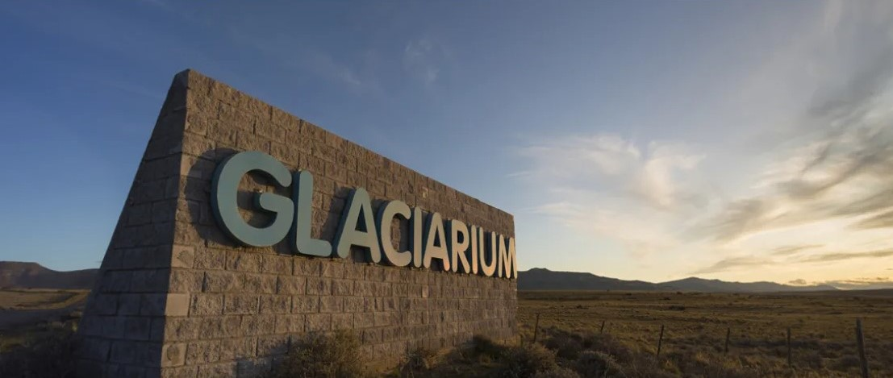
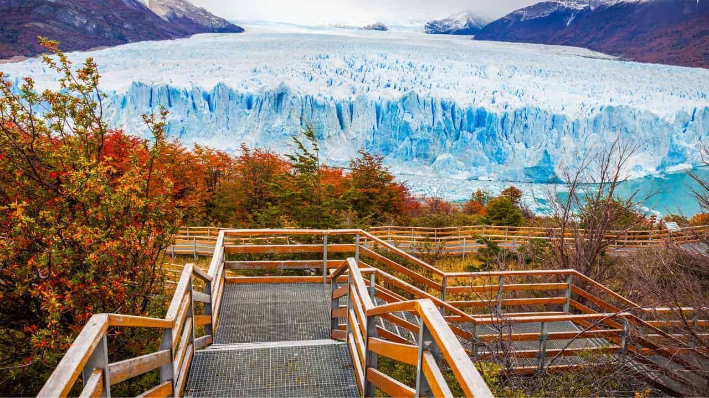

"DONDE LA NATURALEZA SE CONVIERTE EN ESPECTÁCULO"
Un Rincón en la Patagonia: El Calafate es una ciudad ubicada en la provincia argentina de Santa Cruz, cerca del borde del Campo de Hielo Patagónico Sur. Su fama proviene principalmente de ser la puerta de entrada al Parque Nacional Los Glaciares, que alberga el impresionante glaciar Perito Moreno.

Maravilla Glacial: El Parque Nacional Los Glaciares es el hogar de numerosos glaciares, siendo el Perito Moreno uno de los más destacados. Este dinámico paisaje de hielo es famoso por el excursionismo y el turismo, y ofrece una experiencia única en la que puedes presenciar el desprendimiento de enormes bloques de hielo que caen al agua con estruendo.
 

Centro de Interpretación: Para comenzar tu exploración de los glaciares, puedes visitar el moderno centro interpretativo Glaciarium, que ofrece una introducción fascinante a la región y sus maravillas naturales.


Reserva de Agua Dulce: Los glaciares en esta región forman parte del Hielo Continental Patagónico, que se extiende a lo largo de 17,000 kilómetros y es una de las reservas de agua potable más importantes del mundo. De hecho, después de la Antártida y Groenlandia, esta región argentina contiene el 90% del agua dulce del planeta.
El Calafate es un destino que combina la majestuosidad de los glaciares con la conciencia de la importancia de preservar este recurso vital para la humanidad.
¡Conocé la Patagonia glacial en su máxima expresión!